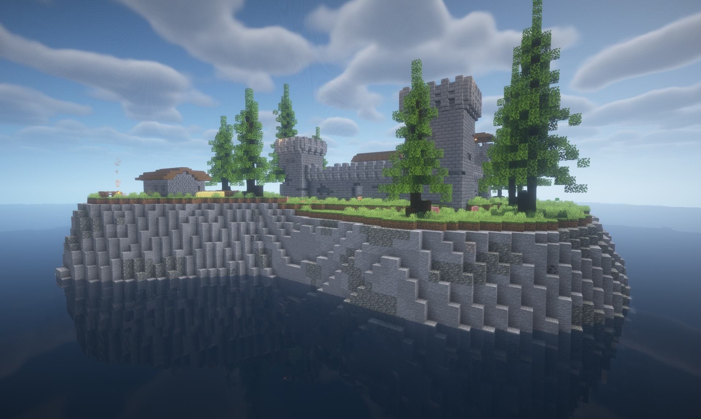

A mighty bastion built on stormy cliffs. StormGuard Bastion is a 500 x 500 map, a small segment of a bigger survival friendly map I've been working on. There are 15 hidden music discs on the island for you to find while exploring, some better than others!
 DownloadA massive prison for roleplaying and exploring. StallVick Prison is a prison island featuring over 150 rooms!
Download